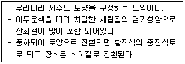

유기농업기능사 (2010-03-28 기출문제)
1과목: 작물재배
1. 기온의 일변화(日變化)가 작물 생육에 미치는 영향으로 거리가 먼 것은?
- 낮의 기온이 높으면 광합성이 촉진된다.
- 밤의 기온이 낮을 때 작물의 호흡소모가 적다.
- 변온이 어느 정도 클 때 동화물질의 축적이 많아진다.
- 밤의 기온이 높아서 변온이 작을 때 대체로 생장이 느려진다.
(정답률: 69%)

2. 점파에 대한 설명으로 옳은 것은?
- 포장 전면에 종자를 흩어 뿌리는 방식이다.
- 골타기를 하고 종자를 줄지어 뿌리는 방식이다.
- 일정한 간격을 두고 종자를 1~수립씩 뛰엄뛰엄 파종하는 방식이다.
- 노력이 적게들고 건실하고 균일한 생육을 하게 된다.
(정답률: 88%)
3. 야간조파(조명)에 가장효과적인 광의 파장의 범위로 적합한 것은?
- 300 ~ 380nm
- 400 ~ 480nm
- 500 ~ 580nm
- 600 ~ 680nm
(정답률: 77%)
4. 현미 155kg을 생산할 때 질소의 흡수량은 약3.50kg이며, 천연공급량은 4.5kg, 흡수율은 0.50 이라고 가정하면 현미 465kg을 생산의 목표로 할 경우 시비량은?(오류 신고가 접수된 문제입니다. 반드시 정답과 해설을 확인하시기 바랍니다.)
- 8kg
- 10kg
- 12kg
- 14kg
(정답률: 60%)
5. 냉해의 생리적 원인으로 거리가 먼 것은?
- 호흡량의 급감소로 생장저해
- 광합성 능력의 저하
- 양분의 전류 및 축적방해
- 화분의 이상발육에 의한 불임현상
(정답률: 33%)
6. 점적관개에 대한 설명으로 옳은 것은?
- 미생물을 물에 타서 주는 방법
- 작은 호스 구멍으로 소량씩 물을 주는 방법
- 싹을 틔우기 위해 물을 뿌려주는 방법
- 스프링클러 등으로 물을 뿌려주는 방법
(정답률: 84%)
7. 작물이 도복되었을 때 나타나는 피해가 아닌 것은?
- 광합성이 감퇴한다.
- 저장양분의 소모가 적어진다.
- 동화물질의 전류가 저해된다.
- 등숙이 나빠져서 수량이 감소한다.
(정답률: 68%)
8. 작물재배에서 생력기계화재배의 효과로 보기 어려운 것은?
- 농업노동 투하시간의 절감
- 작부체계의 개선
- 제초제 이용에 따른 유기재배면적의 확대
- 단위수량의 증대
(정답률: 76%)
9. 경실종자의 휴면타파 방법이 아닌 것은?
- 종자소독약 처리
- 씨껍질의 손상
- 습열 처리
- 저온 처리
(정답률: 58%)
10. 대기조성과 작물에 대한 설명으로 틀린 것은?
- 대기 중 질소(N2)가 가장 많은 함량을 차지한다.
- 대기중 질소는 콩과작물의 근류균에 의해 고정 되기도 한다.
- 대기중의 이산화탄소의 농도는 작물이 광합성을 수행하기에 충분한 과포화 상태이다.
- 산소 농도가 극히 낮아지거나 90% 이상이 되면 작물호흡에 지장이 생긴다.
(정답률: 73%)
11. 때알구조를 이루고 있는 토양 이라고 보기 어려운 것은?
- 지렁이가 배설한 토양
- 유기물이 풍부한 토양
- 곰팡이 균사의 물리적 결합이 이루어진 토양
- 물빠짐이 좋지 않은 토양
(정답률: 88%)
12. 종자 발아에 광선이 필요한 호광성 종자로만 나열된 것은?
- 금어초, 토마토, 가지
- 뽕나무, 호박, 오이
- 상추, 우엉, 담배
- 옥수수, 콩, 버뮤다그라스
(정답률: 78%)
13. 연작 장해를 해소하기 위한 가장 친환경적인 영농방법은?
- 토양소독
- 유독물질의 제거
- 돌려짓기
- 시비를 통한 지력 배양
(정답률: 88%)
14. 내건성 작물의 특징이 아닌 것은?
- 수분의 흡수능이 크다.
- 체내수분의 상실이 적다.
- 체내의 수분 보유력이 작다
- 수분함량이 낮은 상태 에서도 생리기능이 높다.
(정답률: 66%)
15. 일장반응 에 대한 설명으로 틀린 것은?
- 하루 24시간을 주기로 밤낮의 길이가 식물의 개화반응에 미치는 효과를 일장반응이라 한다.
- 한계일장이 긴 식물은 겨울에 꽃을 피우기도 한다.
- 잎은 일장에 감응하여 개화유도 물질을 생성 한다.
- 식물은 한계일장을 기준으로 크게 장일식물, 중성식물, 단일식물로 구분한다.
(정답률: 73%)
16. 남부지방에서 가을에서 겨울동안 들깨 재배시설에 야간조명을 실시하는 이유는?
- 꽃을 피워 종자를 생산하기 위하여
- 관광객에게 볼거리를 제공하기 위하여
- 개화를 억제하여 잎을 계속 따기 위하여
- 광합성 시간을 늘려 종자수량을 높이기 위하여
(정답률: 85%)
17. 병해충 종합관리(Integrated Pest Management)에 대한 설명으로 옳은 것은?
- 효과범위가 넓은 약제를 살포하여 여러가지 병해충을 동시에 방제할 수 있다.
- 농약을 사용하지 않고 천적만을 이용하여 병해충을 방제 할 수 있다.
- 생물학적, 경종적 방법 등을 이용하고 농약살포를 최소화 할 수 있다.
- 병해충에 강하도록 작물의 유전자를 변형하여 병해충을 방제 할 수 있다.
(정답률: 66%)
18. 수해(水害)의 요인과 작용에 관한 설명으로 틀린 것은?
- 벼에 있어 수잉기 ~ 출수 개화기에 특히 피해가 크다.
- 수온이 높을수록 호흡기질의 소모가 많아 피해가 크다.
- 흙탕물과 고인물이 흐르는 물보다 산소가 적고 온도가 높아 피해가 크다.
- 벼, 수수, 기장, 옥수수 등 화본과 작물이 침수에 가장 약하다.
(정답률: 79%)
19. 분류상 구황작물이 아닌 것은?
- 조
- 고구마
- 벼
- 기장
(정답률: 80%)
20. 비료의 4요소는?
- 질소, 인산, 칼륨, 부식
- 탄소, 수소, 질소, 산소
- 수분, 공기, 인산, 질소
- 칼슘, 칼륨, 인산, 질소
(정답률: 84%)
2과목: 토양관리
21. 토양단면상에서 확연한 용탈층(E층)을 나타나게 하는 토양생성작용은?(오류 신고가 접수된 문제입니다. 반드시 정답과 해설을 확인하시기 바랍니다.)
- 회색화작용(gleization)
- 라토졸화작용(laterization)
- 석회화작용(calcification)
- 포드졸화작용(podzolization)
(정답률: 70%)
22. 토양의 입자밀도가 2.65g/cm3, 용적밀도가 1.45g/cm3인 토양의 공극율은?
- 약 30%
- 약 45%
- 약 60%
- 약 75%
(정답률: 69%)
23. 토양 풍식에 대한 설명으로 옳은 것은?
- 바람의 세기가 같으면 온대습윤지방에서의 풍식은 건조 또는 반건조 지방보다 심하다.
- 우리나라에서는 풍식작용이 거의 일어나지 않는다.
- 피해가 가장 심한 풍식은 토양입자가 도약(跳躍), 운반(運搬)되는 것이다.
- 매년5월 초순에 만주와 몽고에서 우리나라로 날아오는 모래먼지는 풍식의 모형이 아니다.
(정답률: 73%)
24. 토양을 담수하면 환원되어 독성이 높아지는 중금속은?
- As
- Cd
- Pb
- Ni
(정답률: 59%)
25. 10a의 논에 산적토를 이용하여 객토하려 한다. 객토심 10cm, 토양의 용적밀도(BD)1.2g/cm3 의 조건으로 객토를 한다면 마른 흙으로 몇 톤의 흙이 필요한가?
- 1.2톤
- 12톤
- 120톤
- 1,200톤
(정답률: 61%)
26. 토양콜로이드물질 중 pH 의존전하를 가장 많이 가진 콜로이드물질은?
- 몬모릴로나이트(montmorillonite)
- 카올리나이트(kaolinite)
- 일나이트(illite)
- 토양부식(humus)
(정답률: 46%)
27. 다음에서 설명하는 모암은?

- 화강암
- 석회암
- 현무암
- 석영조면암
(정답률: 84%)
28. 토양이 물이나 바람에 유실되면 유기농업에서는 상당한 손실이다. 토양침식을 막기 위한 수단으로 틀린 것은?
- 경사도가 5도 이상인 비탈 에서는 등고선을 따라 띠 모양으로 번갈아 재배한다.
- 유기물사용이 많아지면 입단구조가 되어 유실이 적어진다.
- 경사지에서는 이랑방향과 경사지 방향을 같도록 재배한다.
- 경사도가 15도 이상인 곳은 초지를 조성하는 것이 바람직하다.
(정답률: 67%)
29. 탈질현상이 가장 심할 것으로 예상되는 토양은?
- 누수가 심한 논토양
- 보수력이 큰 논토양
- 경사지 밭토양
- 나대지 밭토양
(정답률: 43%)
30. 공생질소고정균은?
- Rhizobium속
- Azotobacter 속
- Azomonus 속
- Clostridium속
(정답률: 73%)
31. 밭토양조건보다 논토양조건에서 양분의 유효화가 커지는 대표적 성분은?
- 질소
- 인산
- 칼리
- 석회
(정답률: 64%)
32. 양이온교환용량이 10me/100g인 토양의 염기포화도가 70%이다. 이 토양의 100g 에 흡착되어 있는 염기는 몇 me인가?
- 3me
- 7me
- 10me
- 13me
(정답률: 73%)
33. 시설원예지 토양의 개량 방법으로 거리가 먼 것은?
- 화학비료를 많이 준다.
- 객토하거나 환토한다.
- 미량원소를 보급한다.
- 담수하여 염류를 세척한다.
(정답률: 84%)
34. 기후조건과 지형이 같은 지역에서 일반적으로 생산력이 가장 클 것으로 기대되는 토성은?
- 양질사토
- 양토
- 미사질 식양토
- 식토
(정답률: 40%)
35. 토양 검정후 그 토양에 알맞게 시비 처방하여 배합후 사용하는 비료로서 환경보존에도 기여하는 비료는?
- 벌크배합비료(BB비료)
- 4종 복합비료
- 복합비료
- 부산물 비료
(정답률: 59%)
36. 토양생성에 관여하는 인자중 가장 광범위하게 영향을 미치는 인자는?
- 기후
- 지형
- 식생
- 모재
(정답률: 62%)
37. 큰 공극의 물이 중력에 의하여 제거된 후 모세관 작용에 의해 토양이 지니게 된 수분량을 무엇이라 하는가?
- 최대 용수량
- 최소 용수량
- 세관 용수량
- 포장 용수량
(정답률: 83%)
38. 토양을 구성하는 3상 중 비열이 가장 높은 것은?
- 물
- 점토
- 유기물
- 공기
(정답률: 53%)
39. 토양 침식에 관여하는 인자로 거리가 먼 것은?
- 토성
- 빗물
- 바람
- 파도
(정답률: 53%)
40. 토양학에서 의미하는 토성(土性)의 의미로 가장 적합한 것은?
- 토양의 성질
- 토양의 화학적 성질
- 입경구분에 의한 토양의 분류
- 토양반응
(정답률: 67%)
3과목: 유기농업일반
41. 친환경 유기농자재와 거리가 먼 것은?
- 고온발효퇴비
- 미생물추출물
- 키토산(액상, 입상)
- 4종 복합비료
(정답률: 78%)
42. 주사료로 조사료를 이용하는 가축은?
- 돼지
- 닭
- 칠면조
- 산양
(정답률: 62%)
43. 친환경 농산물의 인증을 담당하는 기관으로 옳은 것은?
- 농촌 진흥청
- 농협중앙회
- 관할 시, 군청
- 국립농산물 품질관리원, 민간인증기관
(정답률: 74%)
44. 시설고추재배시 발생한 총채벌레의 천적으로 이용하기에 가장 효과적인 곤충은?
- 애꽃노린재
- 콜레마니진딧물
- 온실가루이
- 칠레이리응애
(정답률: 54%)
45. 농후사료 중심의 유기축산의 문제점으로 거리가 먼 것은?
- 수입 유기 농후사료 구입에 의한 생산비용 증대
- 국내에서 생산이 어려워 대부분 수입에 의존
- 물질순환의 문제 야기
- 열등한 축산물 품질 초래
(정답률: 75%)
46. 유기재배 농가에서 사용하지 말아야할 종자는 어떤 육종기술에 의해 생산된 것인가?
- 교잡육종
- 계통분리육종
- 잡종강세육종
- 유전자변형(형질전환)육종
(정답률: 85%)
47. 농산물의 식품안전성 확보를 위하여 생산단계부터 최종소비단계 까지 관리사항을 소비자가 알수있게하는 제도는?
- GAP(우수농산물관리제도)
- GMP(우수제조관리제도)
- GHP(우수위생관리제도)
- HACCP(위해요소중점관리제도)
(정답률: 72%)
48. 유기농업으로 전환할 때 유기농가가 고려할 사항으로 틀린 것은?
- 가축분료나 인분을 사용한다.
- 유전자 변형종자를 사용하지 않는다.
- 외부투입자재를 최대화 하여 생산성을 향상 시킨다.
- 적당한 유기물, 수분, 산도, 양분의 이용으로 균형 잡힌 토양관리를 실시한다.
(정답률: 81%)
49. 유기축산에서 가축의 질병예방을 위한 방법으로 적합하지 않는 것은?
- 저항성이 있는 축종 선택
- 가축위생관리 철저
- 농후사료 위주의 사양
- 운동을 할 수 있는 충분한 공간 제공
(정답률: 82%)
50. 고온발효 퇴비의 장점이 아닌 것은?
- 흙의 산성화를 억제한다.
- 작물의 토양 전염병을 억제한다.
- 작물의 속성재배를 야기(惹起)한다.
- 흙의 유기물 함량을 유지, 증가 시킨다.
(정답률: 79%)
51. 유기농업과 밀접한 관계가 없는 것은?
- 물질의 지역 내 순환
- 토양유기물 함량
- 인증농산물 생산
- 유기농업 연작체계 마련
(정답률: 38%)
52. 친환경인증에 의하여 인증되는 축산물의 종류는 몇가지인가?
- 한가지
- 두가지
- 세가지
- 네가지
(정답률: 61%)
53. 친환경농업의 필요성이 대두된 원인으로 거리가 먼 것은?
- 농업부문에 대한 국제적 규제심화
- 안전농산물을 선호하는 추세의 증가
- 관행농업 활동으로 인한 환경오염 우려
- 지속적인 인구증가에 따른 증산위주의 생산 필요
(정답률: 78%)
54. 유기농산물 생산을 위한 식물병 방제방법으로 적절치 않은 것은?
- 생물적 수단강구
- 내병성 품종재배
- 경종적 수단동원
- 발병예방을 위한 살균제
(정답률: 80%)
55. Codex가이드라인의 기준에 따라 유기재배 인증 농가가 토양개량과 작물생육에 사용할 수 없는 자재는?
- 공장형 농장에서 생산한 가축분뇨를 발효 시킨 것
- 식품및 섬유공장의 유기적 부산물 중 합성첨가물이 포함되어 있지 않은 것
- 퇴비화된 가축배설물 및 유기질비료 중 농촌진흥청장이 고시한 기준에 적합한 것
- 나무숯 및 나무재와 천연인광석
(정답률: 70%)
56. 저투입 지속농업(L ISA)을 통한 환경친화형 지속농업을 추진하는 국가는?
- 미국
- 영국
- 독일
- 스위스
(정답률: 78%)
57. 유기농업시 논에 헤어리베치 투입량은 생초로 어느 정도가 적당한가?
- 1500~2000kg/10a
- 4000~6000kg/10a
- 8000~10000kg/10a
- 12000~14000kg/10a
(정답률: 49%)
58. 벼의 영양생장기(營養生長期) 에 속하지 않는 생육단계는?
- 활착기
- 유효분얼기
- 무효분얼기
- 수잉기
(정답률: 54%)
59. 딸기 재배 시설에서 뱅커플랜트(Banker Plant)로 이용되는 작물은?
- 밀
- 호밀
- 콩
- 보리
(정답률: 43%)
60. 유기축산물 생산시 제한적으로 치료용동물용의약품을 사용할 수 있는 조건은?
- 가축 질병방지를 위한 적절한 조치를 취했음에도 불구하고 질병이 발생하여 수의사의 처방 및 감독 하에서 일시적으로 사용.
- 가축질병 예방에도 불구하고 질병이 발생하여 인증기관의 감독 하 에서 지속적으로 사용.
- 가축의 건강과 복지 유지를 위하여 지속적으로 사용.
- 일정한 부위를 치료할 때만 수의사의 처방 및 감독 하에서 일시적으로 사용.
(정답률: 75%)